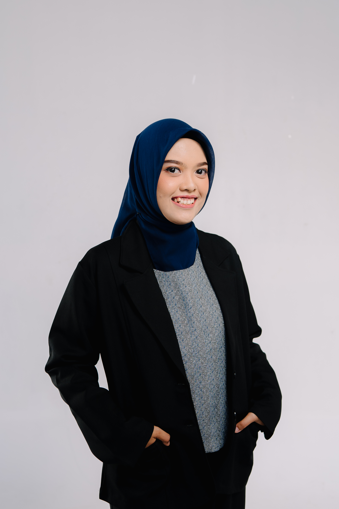

Education
Urban & Regional Planning
Bachelor’s Degree
Studied spatial relationships, communities, planning systems, and how different elements shape a bigger picture.
Aspiring Product Manager with a foundation in urban planning and project coordination. I’m interested in understanding the intersection of business goals and people’s needs, connecting insights across different perspectives, and turning complex problems into practical solutions that create meaningful value.

A perspective shaped by different disciplines.
My journey started with Urban & Regional Planning, where I learned to understand places, systems, people, and the relationships between them.
Working in project coordination taught me how to bring different stakeholders together, make sense of complex needs, and turn plans into execution.
I bring those perspectives into product thinking. I’m interested in understanding the why behind problems, connecting the dots, and building solutions that make sense for people and businesses.
Work, education, and learning that have shaped how I think, collaborate, and approach problems.
Bachelor’s Degree
Studied spatial relationships, communities, planning systems, and how different elements shape a bigger picture.
Regional and national-scale projects
Coordinated project deliverables, stakeholders, documentation, and execution across multiple workstreams.
Project support
Supported project coordination and collaboration involving multiple stakeholders and project requirements.
Dibimbing.id
Built practical knowledge in business analysis, product strategy, research, requirements, product planning, data analysis, and hands-on case projects.
Explore the four pieces that shape how I approach product challenges. Each connects to skills I’ve gained through my education, work, and hands-on learning.
My urban planning foundation trained me to look at places, systems, people, and how different factors influence one another before jumping to solutions.
Education · Planning projects · Product research case studies
A selection of product cases and learning projects. Open a project to see its overview. Detailed artifacts and links will be added as each case is reviewed.
A product concept exploring how culinary micro-business owners can better understand costs, pricing, and profit.
Exploring friction in the Click & Collect journey and opportunities to improve the order confirmation experience.
A product case exploring an education-related problem and its potential solution.
A business and product exploration within the fast-moving consumer goods space.
Exploring payment integration flows, API capabilities, implementation considerations, and security.
Practice turning a dataset into a dashboard that supports exploration and clearer decision-making.
A product exploration around food delivery, user needs, and potential experience improvements.
Outside of work and structured learning, I enjoy exploring ideas, learning new things, and reflecting along the way.
Making space to reflect, understand patterns, and keep growing with intention.
Following questions, discovering perspectives, and learning beyond what I already know.
Finding meaning in experiences and noticing how seemingly different things relate.
Always open to connecting with people, exchanging ideas, and exploring opportunities to build meaningful things together.
Project summary